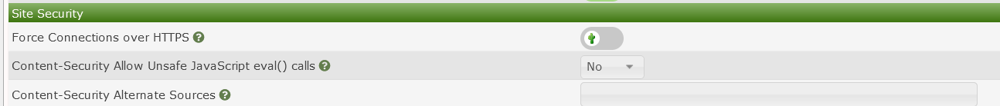

Enabling SSL for cacti is mostly done at the webserver level an example SSL configuration for Http is as follows
yum install -y mod_ssl -y
openssl genrsa -out ca.key 2048
openssl req -new -key ca.key -out ca.csr
openssl x509 -req -days 700 -in ca.csr -signkey ca.key -out ca.crt
cp ca.crt /etc/pki/tls/certs
cp ca.key /etc/pki/tls/private/ca.key
cp ca.csr /etc/pki/tls/private/ca.csr
Then we need to update the Apache SSL configuration file
vi +/SSLCertificateFile /etc/httpd/conf.d/ssl.conf
SSLCertificateFile /etc/pki/tls/certs/ca.crt
SSLCertificateKeyFile /etc/pki/tls/private/ca.key
restart the httpd service
systemctl restart httpd
After you have configured the web server to accept https you can force https in the Cacti GUI
